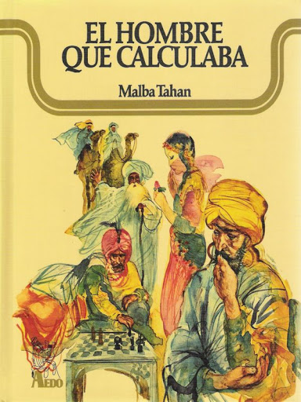

Unos días más tarde le informan a Beremiz que desea conocerlo abul-aabas. Esta era una invitación muy grata para cualquier musulman. Quien se deslumbra al llegar al palacio del emir. Antes de hablar de otros temas el Califa solicita una evidencia de todas las proezas que ha escuchado del calculista. El hombre que calculaba hace su intervención diciéndole a la audiencia esta frase: “Solo es útil el conocimiento que nos hace mejores” y para que entendieran que las matemáticas están en todas partes les ofreció una muestra. Tomó el 220 y el 284 y les explicó la relación que existe entre los números y las letras. Al descomponer el 220 la suma de los divisores de esta cifra suman 284. Si sumamos los divisores de 284 suman 220. La suma de estas dos cifras dan 504 que es la cantidad de palabras que usaron para escribir el poema en el palacio. Agregó que estas forman 32 leyendas y que si se duplican da 64 ya que ese es un número perfecto y que no solo eran simples coincidencias sino que eran enseñanzas del profeta Mahoma.
